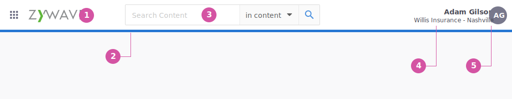
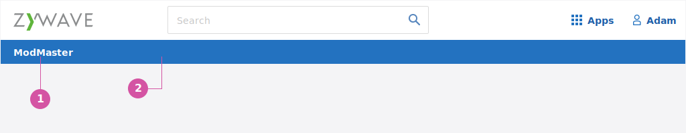
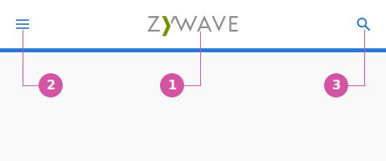

What is the Topbar
The top gives the user easy access to suite and account-level actions, as well as some important actions specific to the application or tool. The top bar also provides a space for product branding.
When to use
The Topbar is a base component of the suite and should be used for every product unless there is a spceifc reason not to.
Variations of Topbar
Althought there is not much difference in layout and componentry, depending on the application we have three different varitations of the Topbar:
- Zywave Topbar - Use when the primary user is a user client. This Topbar has a number of different branding features depending on if the product is singluar in focus or crosses multiple workflows.
- Client Topbar - Use when the primary user is a Brokers client. i.e. Employer Admin or Employee.
see more details below
Anatomy
Zywave Topbar
The suite Topbar contains a number of different components which aid in branding, navigation, and other user actions. The components include:
- Zywave logo
- Branding bar
- Search bar
- Application switcher
- Profile manager

Adding product specific branding
When nessesary,you can also includes specific product branding to the Zywave Topbar:
- Product name - The name of the product.
- Prodcut Specific Branding bar - A taller branding bar.

Client Topbar
more to come …
Sizing & Spacing
Behavior
Actions in the Topbar
- Zywave Logo - Clicking the Zywave logo will bring the user back to the homepage of the application they are in.
- Application switcher - When clicked a modal dialog will show the other applicaions available to the user so they easily switch between other applications they own.
- Profile manager - When clicked a modal dialog will show user imformation such as principle and profile.
Searching
Search is an optional features dependent on the application and users’ needs. Depending on importance or need of searching, this component may or may not be included in the top bar. The search bar will default to the category that’s searchable for the product. For example, content in Broker Briefcase.
The Topbar is the highest section of the shell, meaning everything in the Sidenav, content area and footer can slide underneath it when scrolling. When the user starts scolling down the page the Topbar will shrink down to 10px high, allowing for more vertical space in the content area. Once the user scrolls up 1px the entire Topbar reappears.
Responsive Design
On smaller screens Breakpoint: <720, the top bar responds to allow for a better mobile experience.
- The Zywave logo moves to the middle of the Topbar
- A hamburger menu is located in the upper left. When pushed the Sidenav slides in from the left.
- Right side of top bar should only be used for prime actions per product. Example: Most partners search BB so in mobile, it would make sense for the search icon to be present in the mobile top nav bar

- The App switcher and Profile manager go into the side nav.
- When in a single point product the product branding shrinks to a single colored line and is revealed when in the Sidenav.